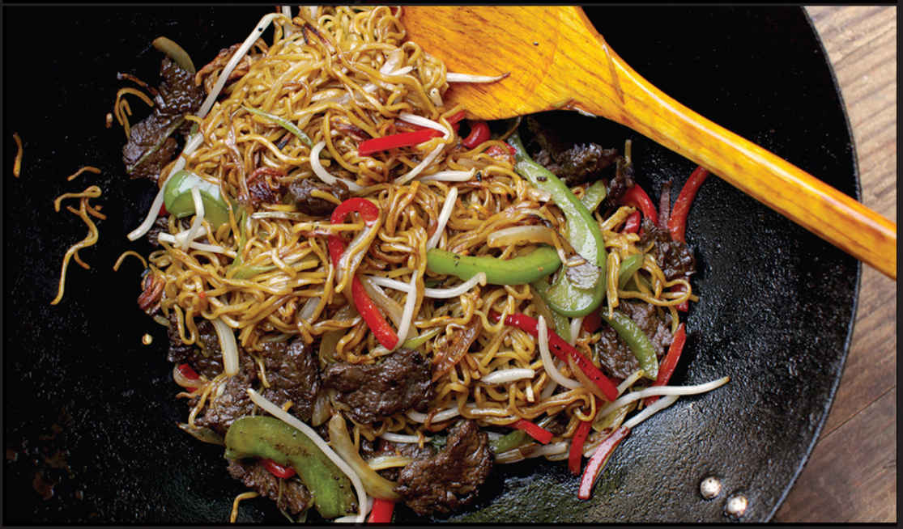

CHOW MEIN WITH BEEF AND PEPPERS
|
Yield Serves 4 |
Active Time 30 minutes Total Time 30 minutes |
Hong Kong–style panfried noodles may also be labeled “chow mein” or “for chow mein.” They are thin egg noodles that typically come precooked (the package will say “ready to fry” or something similar). Raw noodles will have a floury appearance and should be boiled according to package directions, typically 45 to 60 seconds. Dry noodles can also be used. Follow the package directions for cooking times.
This recipe combines tender strips of marinated beef with bell peppers, onions, and noodles for a satisfying, all-in-one meal that’s equally good reheated the next day.
INGREDIENTS
For the Beef:
1 pound (450 g) beef flank steak, skirt steak, hanger steak, or flap meat, cut into ¼-inch-thick strips
½ teaspoon (2 g) baking soda
2 teaspoons (10 ml) soy sauce
2 teaspoons (10 ml) Shaoxing wine
½ teaspoon (2 g) sugar
½ teaspoon (1.5 g) cornstarch
For the Noodles:
Kosher salt
8 ounces (225 g) Hong Kong–style panfried noodles (fresh chow mein; see Note)
For the Sauce:
1 teaspoon (5 ml) roasted sesame oil
1 tablespoon (15 ml) light soy sauce or shoyu
1 tablespoon (15 ml) dark soy sauce
1 tablespoon (15 ml) oyster sauce
1 tablespoon (15 ml) Shaoxing wine
1 teaspoon (2 g) freshly ground black pepper
1 teaspoon (4 g) sugar
For the Stir-Fry:
6 tablespoons (90 ml) vegetable, peanut, or canola oil
1 green bell pepper, cored and cut into ¼-inch strips (about 1 cup)
1 red bell pepper, cored and cut into ¼-inch strips (about 1 cup)
1 medium onion, cut into ¼-inch strips from pole to pole (about 1½ cups)
2 teaspoons (5 g) minced garlic (about 2 medium cloves)
2 teaspoons (5 g) minced fresh ginger (about ½-inch segment)
3 ounces (about 1 cup) mung bean sprouts, stringy ends torn off
Kosher salt and freshly ground black pepper
DIRECTIONS
1 Bring 1 quart (1 l) of lightly salted water to a boil over high heat in your wok. Add the noodles (the wok may lose its boil; that’s OK) and stir them a few times with chopsticks to break them up, then immediately drain through a colander or fine-mesh strainer. (If using raw or dried noodles, follow the package directions for cooking time—typically 45 seconds for raw and a couple minutes for dried). Spread the noodles on a rimmed baking sheet so that they can steam as they cool. Allow to cool until the noodles feel dry to the touch, about 10 minutes.
2 For the Beef: Place the beef in a medium bowl, cover with cold water, and vigorously agitate it. Drain through a fine-mesh strainer set in the sink and press on the beef with your hands to remove excess water. Return the beef to the bowl, add the baking soda, and vigorously massage the baking soda into the meat, lifting the meat, throwing it down, and squeezing it for 30 seconds to a minute. Add the soy sauce, Shaoxing wine, sugar, and cornstarch and roughly work the marinade into the meat for at least 30 seconds. Set aside to marinate for at least 15 minutes and up to overnight.

3 For the Sauce: Combine the sesame oil, soy sauces, oyster sauce, wine, pepper, and sugar in a small bowl and stir together until homogenous. Set aside.
4 BEFORE YOU STIR-FRY, GET YOUR BOWLS READY:
5 For the Stir-Fry: Heat a wok over medium-high heat until very lightly smoking. Add 2 tablespoons (30 ml) of the oil, swirl to coat the wok, then carefully add the noodles, using your spatula to gently spread them into a single layer. They may stick a little bit at this point. That’s OK. Don’t try to move or stir them if they are stuck. Cook the noodles without disturbing them for 1 minute, moving the wok around a bit so that the base heats evenly over the burner.
6 Holding your spatula upside down, gently prise off the crispy edges of the noodles from the base of the wok, working around and under the noodles until they are completely released from the wok. Carefully flip the noodles. If you practice, you should be able to flip them in a single motion using just the wok, like a pancake. Alternatively, use your spatula to flip it over in sections. It’s OK if it breaks up a bit.
7 Cook the second side like the first, then use your spatula to release the noodle cake again. Slide the noodles out into a rimmed baking sheet and spread them into an even layer.
8 Wipe out the wok and return it to high heat until lightly smoking. Add 1 tablespoon (15 ml) of the remaining oil and swirl to coat. Add half of the beef and cook without moving until well seared, about 1 minute. Continue cooking while stirring and tossing until lightly cooked but still pink in spots, about 1 minute. Transfer to a bowl. Wipe out the wok and repeat with 1 tablespoon (15 ml) of the remaining oil and the remaining beef, adding the beef to the same bowl.
9 Wipe out the wok and return it to high heat until lightly smoking. Add 1 tablespoon (15 ml) of the remaining oil and swirl to coat. Add the peppers and onions and stir-fry until lightly charred in spots and the vegetables are tender-crisp, about 1 minute. Transfer to the bowl with the beef.
10 Reheat the wok until lightly smoking. Add the remaining tablespoon (15 ml) of oil and swirl to coat. Add the garlic and ginger and stir-fry until fragrant, about 10 seconds. Immediately add the noodles and cook, tossing and stirring, until hot. Return the beef and vegetables to the wok. Add the mung bean sprouts. Stir the sauce and add it to the wok by pouring it around the edges. Toss everything and stir-fry until the beef is fully cooked and the sauce coats the noodles. Season with salt and black pepper to taste. Transfer to a serving platter and serve immediately.